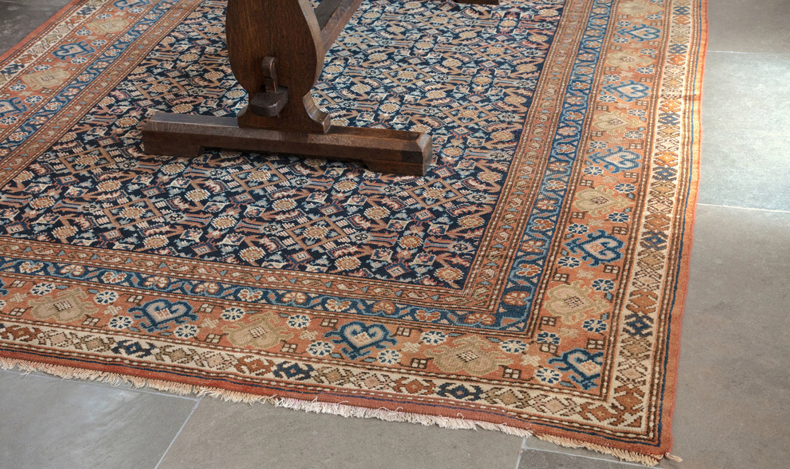

— TRADITION MEETS INNOVATION —
Five generations of mastery, woven into every fibre.
" Evolution in Love with Tradition "
Our products are crafted through five distinct stages, each performed by hand using techniques passed down through generations. From raw fibre to finished masterpiece, every step is an act of devotion.

At Faraz, every masterpiece begins with the selection of the finest natural fibres. Whether it's premium wool, silk, or cotton, the process of hand-spinning filaments is where the soul of the rug begins.
Our artisans carefully spin these fibres into high-quality yarns that serve as the foundation for the intricate knotting process. This traditional method ensures a texture that is both durable and incredibly soft to the touch.

Colour is the heart of a rug's character. Our master dyers use time-tested techniques to create deep, vibrant, and enduring palettes. By using natural and high-quality synthetic dyes, we achieve hues that age gracefully over decades.
Each batch is meticulously hand-processed to ensure consistency and depth, providing the rich visual heritage that Faraz Carpets are known for.

Before a single knot is tied, our designers create high-precision maps (graphs) of the rug's pattern. Every motif and scroll is plotted with mathematical accuracy to guide the weavers.
This stage is where traditional heritage meets contemporary innovation, allowing us to create both classic Persian motifs and minimalist modern masterpieces.

The most labour-intensive stage is the hand-knotting process. Skilled artisans tie thousands of individual knots per square inch, creating a dense and resilient pile that can last for generations.
This is more than just manufacturing; it is a meditative act of creation. Each row of knots is beaten down with a heavy comb to ensure a tight, even surface that manifests the designer's vision in thread.
Once off the loom, the rug undergoes a rigorous finishing process. This includes shearing to the desired pile height, hand-clipping to define details, and multiple lustre washes to enhance the natural sheen of the fibres.
The result is a masterpiece that is ready to tie your room together—a Faraz rug that combines technical perfection with artistic soul.